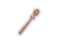
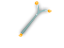
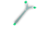
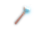
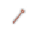
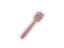
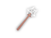

| Wand of ... | UnID'd name | Made of | Weight | Spell | Range [1] | Notes | Tile |
|---|---|---|---|---|---|---|---|
| acid | wooden | wood | 4s | Acid Bolt | 16/8/6 | [5] |
|
| ball lightning | curved | wood | 4s | 16/8/6 | shoots omnidirectional lightning bolts, dangerous: [3]; not the same as Lightning Ball spell [5] | ||
| cold | silver | iron | 4s | Frost Bolt | 16/8/6 | [5] | |
| death | copper | iron | 3s | Death Ray | 6/3/1 | [3] [4] | |
| destruction | cedar | wood | 3s | 4 ball | wreaks gratuitous havoc on enemies and surroundings; drains few HP and PP [4] [5] | ||
| digging | oak | wood | 3s | Mystic Shovel | 7/5/3 | direction 5 will dig a pit in the ground; damages stone monsters |  |
| door creation | glass | glass | 3s | 1 | creates a door; always "glass wand" |
| |
| earthquakes | stone | stone | 3s | Earthquake | level | [4] [5] |
|
| far slaying | brittle | wood | 3s | [2] | expends PP to damage a target, 1d6 damage; bolt bounces; heals shambling mounds [3] [5] |
| |
| fire | golden | iron | 4s | Fire Bolt | 16/8/6 | [5] | |
| fireballs | marble | stone | 3s | Fireball | ball | [5] |
|
| gold detection | bronze | iron | 6s | level | briefly reveals locations of gold on level [5] |  | |
| item detection | twisted | wood | 3s | level | briefly reveals locations of items on level [5] |
| |
| knocking | pine | wood | 3s | Knock | 4/2/1 | can open multiple doors and does not open merely closed doors; cursed locks doors | |
| light | steel | iron | 4s | Light | 3/2/1 ball | [5] |
|
| lightning | brass | iron | 4s | Lightning Bolt | 16/8/6 | [3] [5] |
|
| magic missiles | tin | iron | 3s | Magic Missile | 10/6/4 | [3] [5] | |
| monster creation | ironwood | iron | 3s | Summon Monsters | 1 | creates a random monster; quest object for Gaab'Baay | |
| monster detection | ebony | wood | 3s | level | briefly reveals locations of monsters on level; cursed skips undead and constructs [5] |  | |
| paralyzation | bone | wood | 3s | 4/2/1 | paralyzes enemies in its path [3] |  | |
| poison | obsidian | stone | 3s | 10/6/3 | poisons enemies in its path [3] |
| |
| stunning | willow | wood | 3s | Stun Ray | 8/4/2 | [3] |  |
| teleportation | iron | iron | 4s | Teleportation | 1 | ||
| trap creation | ivory | wood | 3s | 1 | creates a trap; if zapped at a doorway square, it will create a trapped and locked door instead |  | |
| trap detection | purple | iron | 3s | visibility | reveals traps within LOS, cursed may skip some |
| |
| webbing | softwood | wood | 3s | Web | 8/4/2 | [5] |  |
| wishing | glowing | eternium | 3s | Wish | N/A | only 50% chance for wish if cursed; always "glowing wand" [4] |
|
| wonder | teak | wood | 3s | N/A | grants a small number of casting and invokes effects of a random spell; drains PP but not HP [5] |
| |
| bunny summoning | black with white tips | wood | 3s | 1 | summons battle bunny into an adjacent space [5] |
| |
| Grond | crystal | wood | 3s | level | displays a message that depends on the number of insects on the current level: [6] |
|
[1] Additional 1 range is added for each 5 character levels for most wands, 10 character levels for death ray, digging, knocking, and paralyzation.
[2] Range is (4/3/2 B/U/C) * PP + level + 30.
[3] Bounces off walls.
[4] Cannot be recharged.
[5] Always auto-identifies on use. Other wands identify on success only.
[6] 0: The wand reaffirms you with a soothing hum. 1-2: You feel calm... mostly. 3-5: You feel some concern. 6-9: You sense trouble brewing. 10+: You feel as if you are in deep kimmshee!
PC's Learning needs to be at least 6 to determine wand's number of remaining charges. When used in melee or as a missile, 3s and 6s wands deal (+0,1d2), 4s wands deal (+0,1d3) damage. Most wands can be recharged – section 0.14.1.